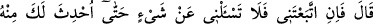
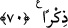

zordur ve bu ancak Allah’ın yardımı ile mümkündür.
Denilmiştir ki: “Mûsâ (a.s.)’ın “inşâallah” demesi, sabra sarılmak konusunda nefsine
güvenmemesinden ileri gelmektedir. Sâlihlerin âdeti budur.” Bütün peygamberlerin
yumuşak tabîatlı olduğu, ancak Mûsâ (a.s.)’ın sert mizaçlı olduğu söylenir.
Eğer “İsmâil (a.s.) “Beni inşâallah sabredenlerden bulacaksın” (es-Saffât, 37/102)
diyerek sabretmiş iken; Mûsâ (a.s.) “Inşâallah sen beni sabreder bulacaksın.” dediği
halde sabredemeyişinin sebebi nedir?” dersen, âlimlerden birisi buna şöyle cevab
vermiştir: “Mûsâ (a.s.), Hızır (a.s.)’a ilim öğrenmek niyetiyle arkadaşlık yapmıştır.
Öğrenci bir şey görünce onu anlamadıkça sabredemez ve hocasına itiraz eder. Nitekim
öğrencilerin genellikle âdetleri budur. İsmâil (a.s.) ise böyle değildi. O teslim olma ve
işini Allah’a havâle etme makamında idi. Dolayısıyla her ikisi de kendi makamlarına
uygun davranmışlardır.”
Bir de şöyle denilmiştir: Mûsâ (a.s.), gayret ve hiddet makamında idi. Kurban olarak
adanan İsmâil (a.s.) ise hüküm ve sabır makamında idi. Âriflerden birisi de şöyle
demiştir: “Kurban İsmail (a.s.), “Beni inşâallah sabredenlerden bulacaksın” demek
sûretiyle kendisini sabredenler arasına sokmak istemiş ve girmiştir. Mûsâ (a.s.) ise
“sâbiran/sabreder” diyerek sadece kendini anmış ve bu yüzden sabredenlerin dışında
kalmıştır. Tefvîz (işini Allah’a havâle etmek), makâmı tahsil ve merâma ulaşma
konusunda nefsi ile baş başa kalmaktan daha sâlim ve başarıya götüren bir yoldur.
“Senin emrine de karşı gelmem” dedi.” Yâni, beni sabreden, âsî olmayan biri
bulacaksın. Yâni hiçbir hususta sana muhâlefet etmeyeceğim, bana emrettiğin hiçbir
emrini terk etmeyeceğim. “Beni sabredici ve âsî olmayan biri bulacaksın” ifâdesi,
sâdece “sabredeceğim, asî olmayacağım” ifâdesinden daha mübâlağalıdır.
et-Te’vîlâtü’n-Necmiyye’de der ki: Âdâbdan birisi de şeyhin fiillerine, sözlerine,
hallerine, hareket ve sükûn hâlindeki bütün davranışlarına îtiraz etmemek, kendi görüş
ve nazarına göre hoşlanmadığı bir muâmele ile karşılaşsa bile onu inkâr edip kötü zanda
bulunmamaktır. Aksine mürid şeyhine karşı hüsn-i zan etmeli, muâmelelerinde isâbet
ettiğine, görüşlerinde ictihad ehli olduğuna îtikad etmelidir. Hatanın kendi noksan
tecrübesinden, aklının yetmediğinden ve ilminin azlığından kaynaklandığını
düşünmelidir.
70. (O kul:) “Eğer bana tâbi olursan, sana o konuda bilgi verinceye” ilk olark ben
açıklayıncaya “kadar hiçbir şey hakkında bana soru sorma!” dedi.
“(O kul:)” Hızır (a.s.) “Eğer bana tâbi olursan” yâni, ilim öğrenmek için benimle
arkadaşlık yaparsan “sana o konuda bilgi verinceye kadar hiçbir şey” benden